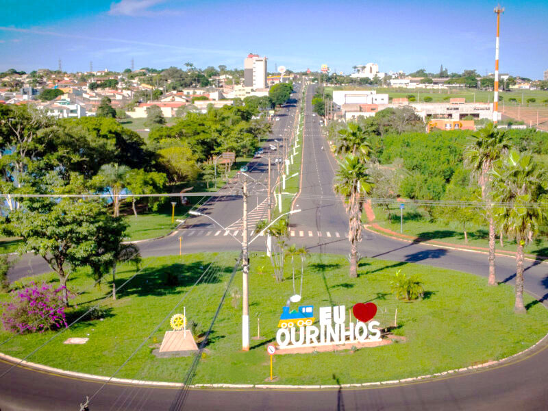

Conheça Ourinhos
Conheça Ourinhos

Ourinhos SP
Ourinhos, localizada no estado de São Paulo, Brasil, é uma cidade conhecida por sua rica cultura e belas paisagens. Com uma população acolhedora e vibrante, é um lugar onde tradição e modernidade se encontram harmoniosamente.
A cidade é famosa por sua gastronomia, especialmente pelo delicioso festival de comida típica italiana que acontece anualmente, atraindo visitantes de todo o país. Além disso, sua arquitetura preserva um charme único, com construções históricas que contam a história da região.
Com uma forte economia baseada na agropecuária e na indústria, Ourinhos oferece oportunidades de trabalho e crescimento para seus habitantes. Além disso, sua localização privilegiada, próxima a importantes rodovias, facilita o acesso a outras cidades e regiões.
Para os amantes da natureza, a cidade conta com belas áreas verdes e parques, ideais para caminhadas e momentos de lazer. Já para quem busca cultura e entretenimento, há diversas opções de teatros, cinemas e eventos culturais ao longo do ano.